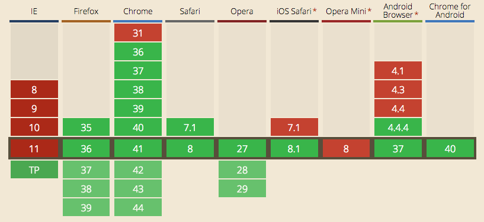
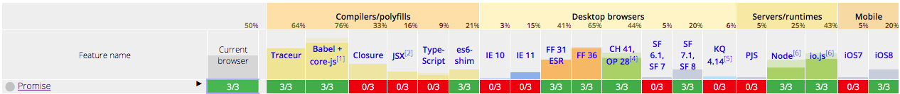

ES6 Promises
Async programming with Promises
by Diego Calderón / @codekult
How Async Works in JS
“Many developers are excited by the promise of better async patterns. But it's impossible to effectivily use any abstraction if you don't understand what it's abstracting, and why”
The Event Loop and Concurrency
It seems that in JS we can do many things at the same time, make a request, set event listeners or cycle through a loop.
But really the JS engine is single threaded, an have what is called a run-to-completion behavior.

To see it in action:
It's often necessary to do some form of interaction coordination between these concurrent "processes", to prevent race conditions or to prevent blocking the event loop.
Also don't forget that this single thread is shared with the browser's tasks, as repainting, updating styles and handling user interaction.
Callbacks
element.addEventListener('click', function () {
// Do something when click
});
They are the most fundamental async pattern in the language, and work in a manner called Continuation Passing Style:
element.addEventListener('click', function () {
setTimeOut(function () {
ajax('/url', function (response) {
console.log(response);
});
}, 500);
});
It seems pretty straightforward, but:
console.log('A');
element.addEventListener('click', function () {
console.log('B');
setTimeOut(function () {
ajax('/url', function (response) {
console.log(response);
});
console.log('C');
}, 500);
console.log('D');
});
console.log('E');
// A, E, B, D, C, response
Callback Hell
Other callback withdraws:
- Inversion of control.
- Lack of sequentiality.
- Lack of trustability.
- Messy functions signature (input and output are mixed).
So… wrapping up
Callbacks are the fundamental unit of asynchrony in JS, and the same as CPS or the different concurrency management patterns, they're very useful.
But they're not enough for the evolving landscape of async programming as JS matures.
Promises Pattern
What are Promises?
Promises are a software abstraction that represent (or are the placeholder for) the eventual result of an asynchronous operation.
Why They're Helpful?
- DOM APIs are relying on promises (ServiceWorker, fectch API, Streams).
- Compared to events, doesn't matter when you observe/register the promise.
- Are better than callbacks in:
* Chaining/sequentiality.
* Error handling.
* Cleaner function signature - More elegant code:
Comparative example
Promises A+ Spec
Some terminology
- promise - Is an object or function with a
thenmethod whose behavior conforms to this specification. - thenable - Is an object or function that defines a then method.
- value - Is any legal JS value, including
undefined, a thenable, or a promise. - reason - Is a value that indicates why a promise was rejected.
Promise states
- fulfilled - The action relating to the promise succeeded.
- rejected - The action relating to the promise failed.
- pending - Hasn't fulfilled or rejected yet.
- settled - Has fulfilled or rejected.
The then method
It's at the core of the specification and provides a shared common base to all implementations.
Also allows Promises/A+ implementations to "assimilate" nonconformant implementations with reasonable then methods.
Promises Libraries
The Good
Q - Complete and Powerful. Used in Angular.js and written by one of the A+ spec's author.
The Bad
…but not so bad
rsvp.js - Simple but lightweight. There is a polyfill based on a subset of this library.
The Ugly
jQuery - A+ non-conformant.
And many more:
Promises in ES6
The API
Browser support
 http://caniuse.com/#search=promisesNode.js and io.js have full support.
 http://kangax.github.io/compat-table/es6/Create a promise:
var myPromise = new Promise(function (resolve, reject) {
// Do a thing, possibly async, then…
if (/* success */) {
resolve(value);
} else {
reject(reason); // It's recommended to use an `Error` object as reason.
}
});
Consume a promise:
myPromise.then(
function (value) { /* fulfillment */ },
function (reason) { /* rejection */ }
);
Promisifying XMLHttpRequest
function httpGet(url) {
return new Promise(function (resolve, reject) {
var request = new XMLHttpRequest();
request.onreadystatechange = function () {
if (this.status === 200) {
// Success
resolve(this.response);
} else {
// Something went wrong (404 etc.)
reject(new Error(this.statusText));
}
}
request.onerror = function () {
reject(new Error(
'XMLHttpRequest Error: '+this.statusText));
};
request.open('GET', url);
request.send();
});
}
Using it:
httpGet('http://example.com/file.txt').then(function (value) {
console.log('Contents: ' + value);
}, function (reason) {
console.error('Something went wrong', reason);
});
Chaining:
httpGet('story.json').then(function (response) {
return JSON.parse(response);
}).then(function (response) {
console.log("Parsed JSON:", response);
});
Chaining thenables:
httpGet('/getBooksCollection').then(function (response) {
httpGet('/getBooksCollection/' + response[0].id);
}).then(function (bookData) {
console.log('First book: ' + bookData.name);
});
Error handling:
Using rejection callback
httpGet('/url').then(function (response) {
// Success
}, function (err) {// Rejection callback
console.error('Error: ', err);
});
Using catch clausure:
httpGet('/url').then(function (response) {
// Handle response
}).catch(function () {
// Handle error
});
It's like:
httpGet('/url').then(function (response) {
// Handle response
}).then(undefined, function () {
// Handle error
});
Common Patterns of Use
- Promise as a future value.
- Promise as flow control mechanism.
Promise.all "Gate"
All the promises you pass in must fulfill for the returned promise to fulfill. If fulfilled, returns an array with all the promises values. If rejected, returns the first promise rejection reason.
Promise.race "Latch"
Only the first promise to resolve (fulfillment or rejection) "wins". It returns its fulfillment value or rejection reason.
var p1 = Promise.resolve( 42 );
var p2 = Promise.resolve( "Hello World" );
var p3 = Promise.reject( "Oops" );
Promise.race( [p1,p2,p3] )
.then( function(msg){
console.log( msg ); // 42
} );
Promise.all( [p1,p2,p3] )
.catch( function(err){
console.error( err ); // "Oops"
} );
Promise.all( [p1,p2] )
.then( function(msgs){
console.log( msgs ); // [42,"Hello World"]
} );
Also there are anti-patterns:
- Recurrent nested promises.
- Swallowed errors.
- Messy chained promises (the revenge of the callback hell).
- More promise anti-patterns.
The Next Step: Generators
Generators are a special kind of function that can be
suspended and resumed (with the yield
operator). They are similar to other languages' coroutines, and allow to expressing async flow
control in a sequential, synchronous-looking fashion.
Takeaways
- Regarding to the event loop, don't make it wait.
- JavaScript is single threaded, but we can use events, callbacks and CPS to deal with this.
- Promises allows us to create more sophisticated async patterns.
- ES6 implements promises according to the Promises/A+ spec.
- Some newest DOM APIs are based on the use of promises.
- The basic use of promises is easy to aboard, but they underhood mechanism is sort of complicated.
- Generators empowers promises, giving us a sequential-like flow.
Webography
- Concurrency model and Event Loop
- The JavaScript Event Loop: Explained
- What the heck is the event loop anyway?
- JavaScript Promises: There and back again
- ECMAScript 6 promises: Foundations
- ECMAScript 6 promises: The API
- No promises: Async JS with only generators
- Promises and Generators: Control flow utopia
- YDKJS: Async & Performance
Q&A